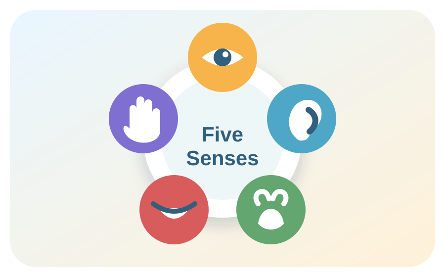

Tools
Quick Use
Open one sense at a time for short explanations, examples, activities, and review prompts. This structure works well for quick lessons, family learning, classroom review, or self-guided exploration.
Learning Tool
A simple, mobile-friendly guide to sight, hearing, smell, taste, and touch. Use the dropdowns to explore each sense, quick examples, activity ideas, and review questions.
Version v1.1 · Updated 2026-06-28

Open one sense at a time for short explanations, examples, activities, and review prompts. This structure works well for quick lessons, family learning, classroom review, or self-guided exploration.
Tap Clear Cache, then reload the app. On PC, you can also press Ctrl + Shift + R.
Refresh the page. If that does not work, use Clear Cache and reopen the app.
Open the app while online first. Let it fully load, then test offline again.
Use the browser back button or reopen the Hub directly. Then check whether this app
is stored at apps/five-senses-pwa/ so the Hub link path works.
Tap × Close. On PC, press Escape. If needed, refresh the page and then use Clear Cache.